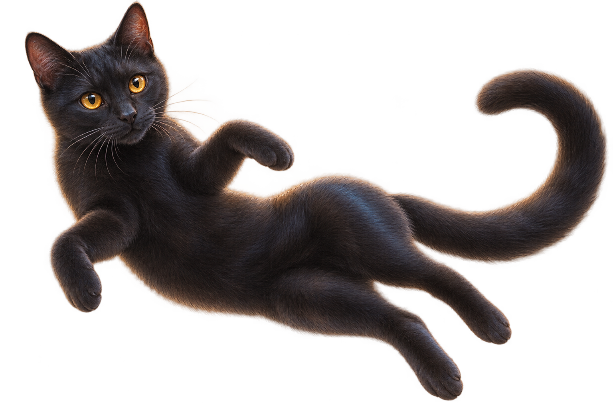
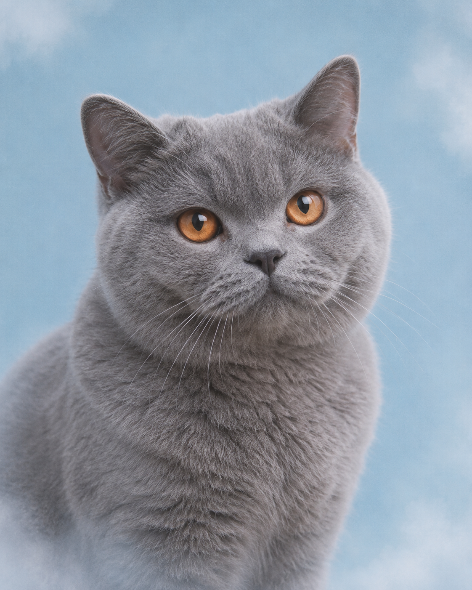
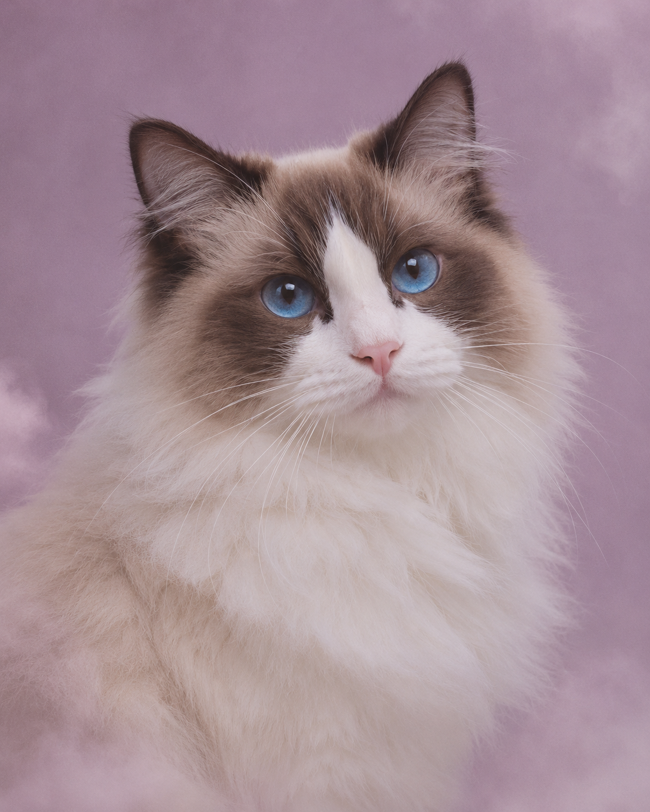
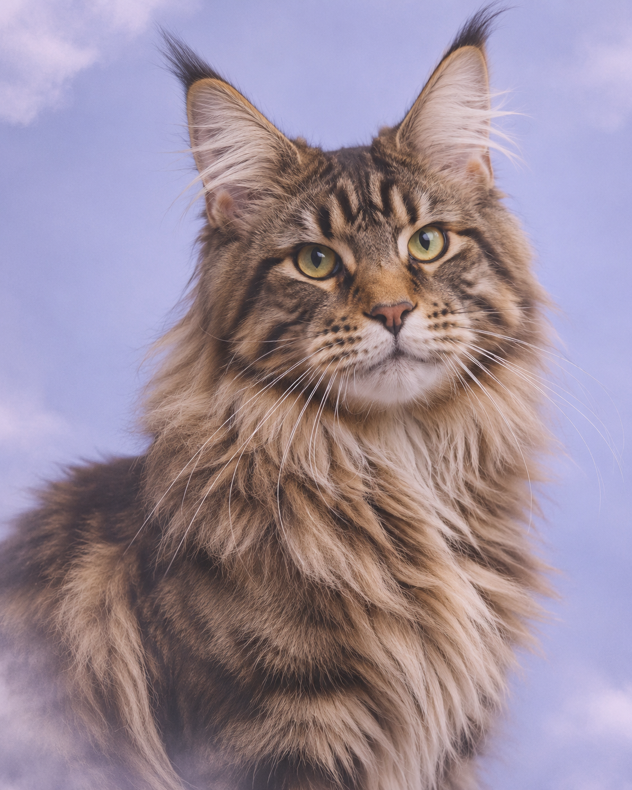
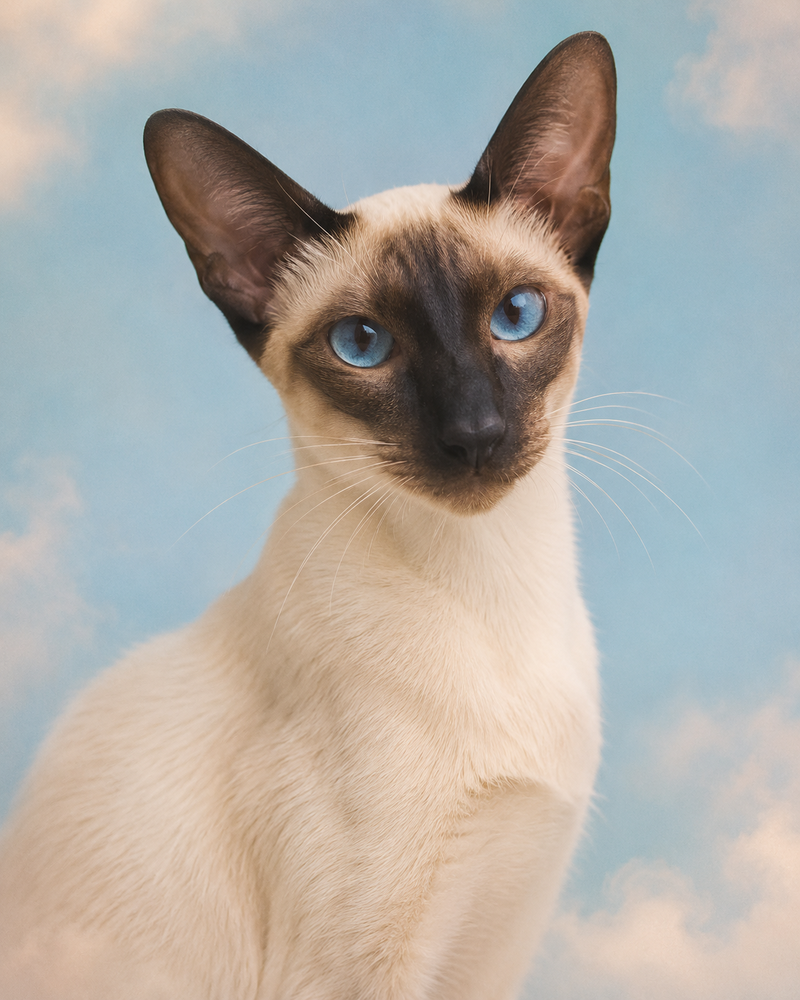
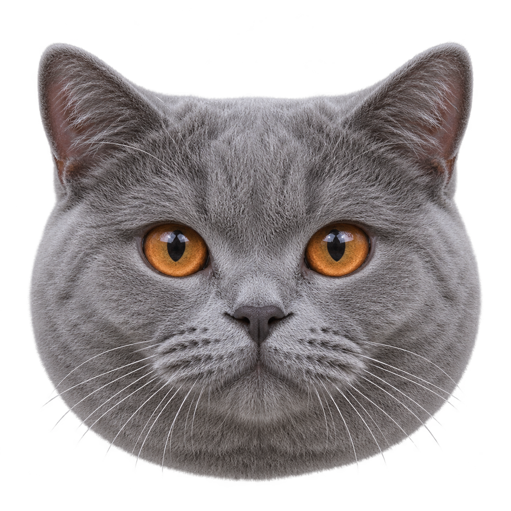

布偶貓
藍眼睛和柔長的毛很醒目。圖中是雙色花紋，臉部中央的白色像一個倒 V。
英短的圓臉自帶包子模式，找不到關閉按鈕。

緬因貓自帶毛毛圍巾，梳毛時才知道這件有多厚。




英國短毛貓的頭和眼睛偏圓，身形結實，短毛密實，像穿了件絨毛外套。
圖中是藍灰色的英短。英短也有其他毛色，可以一起觀察牠的頭形、身形和被毛。
藍眼睛和柔長的毛很醒目。圖中是雙色花紋，臉部中央的白色像一個倒 V。
牠有偏方的口鼻輪廓和蓬鬆的頸毛。圖中的耳尖毛像兩支小筆刷。
藍眼睛配上淺色身體。臉、耳朵、四腳和尾巴的毛色較深，這種花紋叫重點色。
親人度依個體而異，健康欄列出可留意的疾病。
